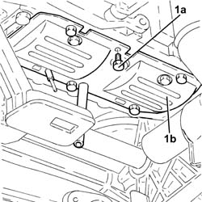

1020A46 oil sump bulkhead - r r
- Path
- Procedures > 10 ENGINE UNIT > 1020 CRANKCASE SUMP AND COVERS > 1020A CRANK CASE OIL SUMP > 1020A46 oil sump bulkhead - r r
- Kind
- repair procedure (removal / refitting; the operation number is the code)
- Applies to
- engines: 1.3 JTD 16v; all production periods
- Interactive page
- https://sloeber94.github.io/elrnDB-fPnd/en/#/2752563
Applies to: engines: 1.3 JTD 16v; all production periods
 Removing
Removing
 Refitting
Refitting1. Undo the bolts (1a) and remove the crankcase oil sump partition (1b).

Applies to: engines: 1.3 JTD 16v; all production periods
Refitting
RemovingFit the crankcase oil sump partition and fix it tightening the bolts to torque.